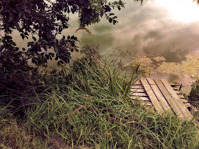

34 Поход в Зону к Тайной Комнате
... идешь и чувствуешь, как дождь стекает по лицу, капает с кончиков волос... как временами нахлынет ветер... и так чувствуешь, словно и не дождь это.. словно сам ты изнутри плачешь и с каждой каплей и легче становится и свежее... словно все ненужное выкидываешь на помойку... идешь и чувствуешь остро, пронзительно, как молочно-зеленый мог пружинит у тебя под ногами, как скрипнет сухой сук, прогнется сгнившее дерево.. все чувствуешь, все фиксируешь, как пишущая машинка.. а слов нет... и понимаешь, что за всей этой канителью мыслей-то не осталось. Настоящих, своих мыслей, не этой всей напускной мишуры.. ну не может же быть, что правда ничего не осталось, что теперь ты только чувствуешь, глубоко, остро, но не думаешь, а дождь стекает по щекам чужими слезами, не солеными и не горькими... пусть поплачет за меня, коли я сроду не плачу. А мы-то смешные верили, что сами станем всем фальшиво улыбаться, ото всех прятать свое нутро.. но ведь не заметили, что спрятали то мы его от себя... и вот теперь только и остается идти в это промозглое дождливое никуда... из такого же ниоткуда... какая разница, было там чего или нет, все равно ж его больше не будет... ведь это все было, зачем-то же оно было.. столько всего было... а на деле было-то оно только затем, чтобы все подготовить к этой самой минуте... когда ты сейчас идешь под дождем, весь промокший как собака, и ничего тебе не нужно.. кроме этого самого дождя... а в голове одно только... гады.. мысли-то мои тоже забрали.. ну ничего, пусть дождь за меня все скажет, раз уж мы все забыли, себя забыли, мысли свои забыли... пусть будет дождь. После дождя будет свежее.. в любом случае будет что-то по-новому...
когда-то меня спросили, чего я хочу... я понимаю, может, это странно, но я хочу хотеть.. только по-настоящему, не на половину, не на четверть. Вообще хочу только все настоящее, я не терплю суррагатов. Я хочу, чтоб лил дождь, и чтоб он лил не за окном, а на мои щеки, волосы, чтобы я промокла до нитки и была счастлива... я хочу бежать по этой траве и чувствовать ее под ногами, я хочу радоваться, черт возьми, искренне и неподдельно радоваться этому миру.. я хочу чего-то так желать, чтобы донельзя, чтобы по-другому было просто нельзя. Я не хочу всю жизнь пронадеяться, проискать какие-то дурацкие идеалы.. я не способна пойти на костер ради какой-то веры.. осудите? а я и не набивалась в герои. И не буду. И они, они мне желают только одного.. чтобы все у меня было попроще.. люди, которые всю жизнь ходили по стеночке, пытаясь отхватить хотя бы маленький кусочек от гигантского пирога.. и мне того же желают. Да вот не поймут они... что я принадлежу к той ненормальной братии, которая в жизни не видела ровных дорог, а все время ходит по обочине... что это? авантюрный характер? да какой бы там ни был!... ну не могу я, когда все тихо и спокойно и гладко... все нутро словно восстает против... и нахожу себе все новые и новые проблемы. Но проблем тоже не хочу. Нисколечко! Но ведь я ж понимаю, что жизнь-то она хитрюга. как маятник... у кого-то слабо покачивается - ни печалей сильных ни веселья особого, а у кого-то на полную катушку.. тут тебе всего хватает, и дикой радости, и отчаяния... пусть меня кто-то осудит, но я не могу жить по-другому, пусть скажет, что я глупая и избалованная...а я спорить не буду... и скажет, что среди этого дождя, мха и болот я все растеряла.. да так и есть... только милее мне мои болота во сто крат, чем всякие дворцы... нет у меня ничего, и Заросли - это последнее, куда можно просто так прийти и побродить под дождем, и никто тебя не осудит... ничего не прошу никогда не у кого, лишь прошу - последнего не отнимайте, оставьте мне мои Заросли... я здесь себя чувствую собой, а не кем-то другим... пусть пользы с сего кому-то мало, а я и не спешу облагодетельствовать мир какими-то своими деяньями. Возможно, я человек-то вовсе не плохой... вот приятеля одного не кинула, хотя могла бы кинуть... хотя, черт с ним, это что ж я уже, в самом деле, себе очки зарабатываю? Да не потому я его не кинула, что думал о папаше с калькулятором, который встретит меня на страшном суде, а потому, что просто противно мне стало. Просто поняла, что самой мне будет от себя тошно, если его кину. Заросли мои родимые, топь-матушка... Кто-кто, а вы-то меня всегда примете... и как сейчас помню.. лежишь в камышах или траве среди мха, а между деревьями перескакивают молнии, такие у нас только здесь, в Зарослях бывают... и одна с дуру стукнет в болото, несколько минут лежишь оглушенная, ничего не видишь, не понимаешь.. лишь чувствуешь, что у тебя вдруг словно стало три сердца.. и одно, самое большое, в животе, бешенно колотится, вот-вот да выпрыгнет, а еще два поменьше в ушах и висках... и много маленьких в кончиках ободранных измазанных пальцев... а вокруг запах озона.. и сама ты пытаешься врасти в мох и ждешь, когда же это закончится, и боишься пошевельнуться... лишь надеешься, что молния не ударит в тебя с дуру.. здесь у нас и не такое бывает.. вот зачем они, спрашиваются, в болото бьют? что их туда тянет? вокруг деревья, а они прямиком в болото... глупые какие-то молнии, неправильные...
